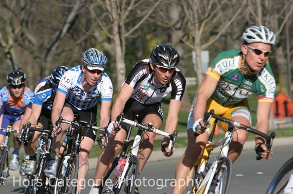

Racing season's here!
I can't decide whether I'm excited or terrified. Late last summer, I upgraded categories, from Cat 3 to Cat 2, the second highest of the amateur categories. Of the next five races I did, I only finished two of them. It was a bit of a wake up call. The bell curve, it seems, goes on and on and on.
Of course, the same thing happened to me when I upgraded from Cat 4 to Cat 3, and after another winter of pounding out the miles, I was competitive in the 3's. Hoping for a similar result this time, I've been slogging away at the bike all winter. Despite changing jobs and adding at least two hours of commuting to every day, I've mostly met my weekly hour targets. I also got a lifting coach--Mike of Crossfit Oakland--to work on my power over short intervals.
All the same, I'm plagued by lingering doubts. Based on the numbers from my power meter, I can say with certainty that I'm faster than before. But I have no idea if I'm fast enough.
When you train this much, you have to give up something. Usually you give up a lot of things. Going out. Drinking. Traveling to see friends. Projects. What if it was all in vain? What if I've wasted six months being a cycling ascetic, only to get dropped in three fifths of my races for a whole season?
A week from now, I plan to race Valley of the Sun in Arizona, a Cat 2-only race. But I need a tune-up before then, and there's only one real race this season before that: the Cherry Pie Criterium in Napa. A criterium is a race of many laps around a short loop. They're usually run by time. This one, for example, is sixty minutes, meaning that the promoters will time our first thirty minutes or so, estimate how many laps it will take to make an hour, and then put up lap cards starting at five to go. In addition, throughout the race there are several primes: as we cross the finish line on some lap, the promoter will ring a bell indicating that the first rider to cross the line the next time will win a prize. By ringing the bell frequently, promoters keep the pace high and the race interesting.
Besides being well timed at a week before Valley of the Sun, the Cherry Pie course also has a small hill, which is good for me, as my skinny bones tend to get up hills faster than other racers of similar abilities. So Cherry Pie would seem like the perfect warm-up race, except that I won't only be racing other Cat 2's. There aren't enough of us to fill a field in most races, so promoters tend to group us with the Cat 1's and the pros. And with the Tour of California starting the same weekend as Valley of the Sun, the local pros are also looking for a good tune-up race.
A few days before Cherry Pie, I take a look at the start list, and I almost choke. Lucas Euser, an up-and-coming pro who will start the Giro d'Italia this year, will be there. So will Jackson Stewart, fresh from the Tour of Quatar, where he was sprinting against Tom Boonen, arguably the top sprinter in the world right now. And as if that weren't enough, Freddie Rodriguez, three-time U.S. national road race champion, is on the list as well.
| Left to right: Lucas Euser, Jackson Stewart, and Freddie Rodriguez | ||
I've read about these guys in VeloNews for years, and I'm quite sure they can ride the legs right off me. I'm glad I'm only doing this race as a tune-up. (I'm also pretty stoked at the opportunity to line up next to them at the start.) If I so much as finish this race, I tell myself, the Cat 2's at Valley of the Sun are going to seem a lot less intimidating.
Racing Cherry Pie with me are two teammates from my new team, Metromint Cycling: Julian and Ryan. Julian is also new to Metromint. He was a fast junior (under 18) racer, and he's now a student at UC Santa Cruz. Ryan is a member of Stanford's cycling team, last year's national collegiate champions. Before the race, we discuss strategy over email. I say my plan is to hang on for dear life, and--rather optimistically--that if by some miracle I feel good, I'll go for a prime or two.
On Sunday morning, Lucy and I drive up to the race in the Metromint team car. The parking area is super crowded by the time we get there, but after delivering a case of Metromint for the promoter to hand out as prime prizes, we're directed to a front row parking spot, right by the finish line. We also meet Lucy's friend Jen, who has come to watch the race.
I take a walk around the course to check out the pavement. It starts on a slight downhill, takes a fast right-hand corner, sweeps around to the left before taking two tight, but flat, left-hand turns, then takes a slow curve to the right before climbing back up the hill to the finish line. It isn't a steep climb, I can do it in my big chainring, but I'm sure it will nonetheless be decisive at race pace. After the line, it's a tight U-turn and past the starting line again.
After walking the course, I pick up my number and talk to my teammates in other categories about how their races played out. Ali, one of our Cat 3 women, points out that in her race it was easiest to move up through the pack on the short stretch before the uphill while others were busy steeling themselves for the climb to come.
With that tip in mind, I pin my number to my jersey, set my bike on the stationary trainer, and start my warmup. All too soon, it's time to line up. I reset my power meter, check that I'm in a good gear for the start, and make small talk while we wait for the whistle.
The race starts and for what seems like an eternity I can't clip into my pedal. By the time I do, I'm at the back of the pack. Luckily for me, though, Ali's advice pays off, and I move up on stretch before the hill over the next few laps.
In fact, Ali's trick works a little too well, and I soon find myself sitting in fifth place--way too close to the front--there's not nearly enough draft up here. Worse still, the next time we cross the line, the promoter rings the bell.
Now I'm faced with a real dilemma. Half of my brain is saying, "PRIME! ATTACK! You have perfect position!" The other half is saying, "Are you crazy? You're lucky you haven't already been dropped. If you go for that prime, you'll be spent, and you'll get dropped for sure." I think about what I said over email, that if I was feeling good, I'd go for a prime. I'm sitting here, in fifth wheel. I'm clearly not feeling bad. And yeah, maybe I'll get dropped. But Julian and Ryan can see me--they see how well placed I am for this--and if I don't go for it, they'll never respect me again.
So as we come around to the short straight stretch before the hill, I jump like all hell. Flying off the saddle, I yank on the bars with my right hand while crushing my right pedal towards the ground. Then the left side. Again and again. As I start to spin out, I sit, put my head down, and hammer towards the line. My hamstrings are killing me, but I can see I've left most of the pack behind. Dig! Dig! Dig!
Alas, at the last second another rider, Bryan Larsen, comes around me and takes the prime by inches.
I have only a few seconds to be mad. Bryan keeps the pace up as we take the U-turn, and he starts hammering even harder as we start the descent. Behind me someone yells, "Go! Go! Go!" I look back and...my attack has opened up a gap on the main field. I pull through, eyes crossed in exhaustion, and quickly wave the next guy through, counting my companions as I drift to the back of the line and into the draft. There are nine of us, including Jackson Stewart and Lucas Euser.
|  |
| The break. Jackson is in front of me in the black and white jersey. Lucas is in the back. |
The first moments of a breakaway are always tenuous. It never, ever feels like it's going to work. We grit our teeth nonetheless, taking our pulls, each rotating through, knowing that so long as we stay off, none of us will finish worse than ninth. Each lap we see the pack charging up the hill as we descend the other side. Each time it seems as hopeless as before.
And then, without any warning, we're suddenly twice as far ahead. They've given up, unable to coordinate their chase enough to catch us.
In truth, they've given up just in time for me. Each time I pull through into the wind, I wonder how I'm going to stay on. At thirty minutes in, I think to myself, "There's no way I can do this." But Ryan and Julian are back there, counting on me. If I fall back, Metromint will have no one in the break, and neither of them is likely to be able to bridge up to the break alone.
Each time we hit the hill, I start to fade a bit, drifting back through our group. I pass Lucy and Jen, and they yell like there is no tomorrow. I stand up, mash the pedals and catch back on, recovering in the draft down the hill. Lap after lap passes this way.
| Grimacing up the hill. |
At forty-five minutes in, I start thinking I might just pull it off. When I see the lap card indicating five laps to go, I'm sure I'm home free. We have over a minute on the field now; there's no way they'll catch us. All I have to do is hold this pace for another five laps.
Of course, once everyone else realizes the pack is certain not to catch us, the motivation to work together vanishes, and the attacks begin. As we come up the hill on the next lap, Jackson attacks, jumping off the front of our group. I felt it coming. I feared it in advance. And as I watch it happen, I think, "Oh, shit! I have to follow that?" But I jump anyway, digging as hard as I can.
The size of our group saves me. I don't catch Jackson's wheel, but Lucas does. Someone else catches Lucas's wheel, and so on down the line, until I catch the eighth wheel of the group right before the turn-around. I might have made it if we were only seven. Six, however, I'm not so sure about. But making it is enough, and I recover in the draft over the next lap.
As soon as I've recovered, we're back at the hill, and Lucas attacks. Once again, I'm saved by our numbers, just catching the draft of the last wheel. Once again I sit in the draft to recover.
Luckily for me, there is no attack on the next two laps. Everyone seems to have decided that if Jackson and Lucas can't get away, neither can anyone else. With a lap to go, Lucas says, "Drag race." We all laugh.
I retreat into my thoughts, thinking about how I want to finish this race. In truth, I'd like to jump early, just before the start of the hill. It worked for me in the prime. No one expects the newbie Cat 2 to go first, and the little gap I'd get from their surprise might just be enough. At the same time, I've sat in the draft for five laps in a row now, resting while the pros continued to work in the wind, and I feel like it would be a gross violation of cycling etiquette to jump first. I decide instead to sit on Jackson's wheel. I know I can't outsprint him, but I figure that in hanging on as long as I can, perhaps I'll beat several others.
As we approach the hill for the last time, our pace slows to a crawl. I can feel everyone looking at everyone else, wondering who will go first. It's Jackson. He jumps, and we all jump with him. As planned, I have his wheel, but I can't match his jump, and I quickly lose his draft. I catch another wheel, now at the back of the sprint. But the hill is long, and I hold on. With thirty yards to go, I pass Justin Fraga of BPG / Montano Velo. I almost catch Bryan Larsen, the rider who beat me in the prime, but the line comes to soon, and he takes it by inches.
I am momentarily bummed. I am also completely out of breath, and I get only one foot out of the pedals before sitting--then laying--on the ground twenty yards from the finish line.
And then the whole magnitude of what I've just done hits me. I just placed 8th in a Pro/1/2 race! The same guys who dropped me three out of five times last summer! I was in a break with a bunch of pros for almost an hour!
Still laying on the ground, I throw my hands up in the air in celebration, just in time to punch Jackson's chainring as he rides by. It hurts like hell, and I don't care at all. I lay there, smiling. It is a beautiful day, the sky is blue above me, and suddenly the whole winter feels totally worth it.
After the race, the group of us gather around the announcer's table to collect our winnings. My eighth place is worth $40 and a cherry pie. They also give me the "Cycles Gladiator Most Aggressive Rider" award, including a bottle of Cycles Gladiator wine, for initiating the breakaway when I went for the prime.
I also run into Ali and thank her for the tip about where to move up through the field. She says, "Remember: this is the day." Or at least, that's what I think she says. My race-addled brain can't make sense of it at all, though, and I ask, "What?" She smiles and says, "This is the day that you beat Freddie Rodriguez."
I think about it for a moment, and then I smile. He would have destroyed me if it had come to a bunch sprint. But it didn't. I was in the break, and he was in the main group. And so I smile the whole way home.
| Freddie, leading the chase. |